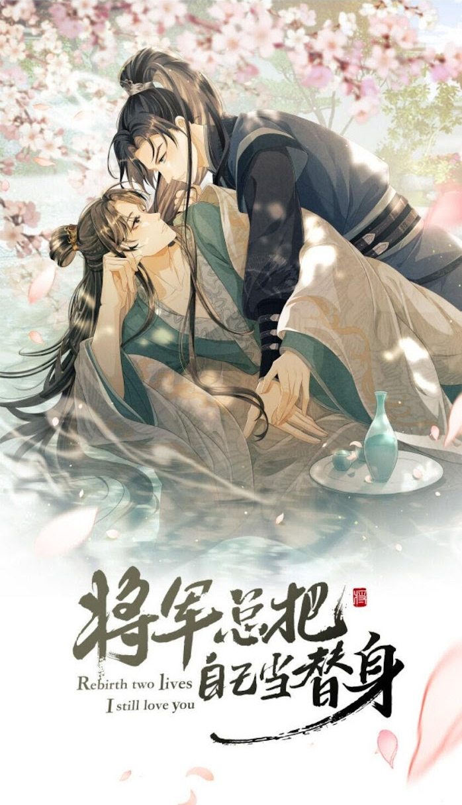

En su vida anterior, Mu Zhiming fue engañado y perseguido por el hombre que más admiraba, muriendo trágicamente en el camino del exilio.
Después de renacer, estaba decidido a cambiar el curso de los acontecimientos y tener una vida pacífica.
Sin embargo, justo cuando empezaba a buscar el poder, entra en contacto con los misterios de la Capital, una guerra furiosa y los Príncipes disputando su derecho al trono; vislumbró un amor sincero. Mu Zhiming cayó dentro, incapaz de detenerse.
A pesar de eso, en su noche de bodas, lo primero que Gu Heyan le dijo a Mu Zhiming fue: "Sé que no soy más que su reemplazo".
Mu Zhiming: “….?? Esposo, ¿hay algún problema con tu cerebro?
Gu Heyan: "No me importa".
Mu Zhiming: "..."
Gu Heyan: “Cuando todo termine, podrás ir a buscarlo. No te perseguiré”.
Mu Zhiming: "..."
Gu Heyan: "Estoy dispuesto a que me utilices".
Mu Zhiming: "..."
Gu Heyan: "Ya estoy satisfecho con tu compañía, no pediré nada más".
Mu Zhiming no pudo soportarlo más y arrastró a Gu Heyan hacia la habitación de su ala.
Gu Heyan: "¿A dónde me llevas?"
Mu Zhiming apretó los dientes y dijo: “¡Para! ¡Consumar! ¡Nuestro! ¡Casamiento!"